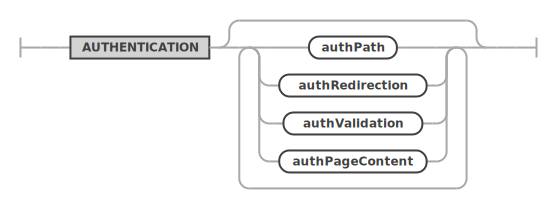

MySQL REST Service - PREVIEW
MRS DDL Reference
This document discusses the MySQL REST Service (MRS) DDL - SQL Extension. The MRS DDL - SQL Extension adds a set of MRS specific DDL statements to the MySQL Shell SQL handling in order to provide a familiar management interface to MySQL developers and DBAs.
Chapter Overview
Please also see
- MySQL REST Service - Developer’s Guide - This book explains how to install and configure the MySQL REST Service (MRS) as well as how to access the data through REST calls.
- MySQL REST Service - SDK Reference - This document explains how to work with the MRS Software Development Kit and discusses the Client APIs.
1 Introduction to the MRS DDL - SQL Extension
Providing a management interface that feels familiar to MySQL developers and DBAs and integrates well into their existing processes has been an essential part of the MySQL REST Service (MRS) design.
The MySQL REST Service Shell plugin registers a SQL rewrite extension that process a set of MRS DDL statements that allows these DDL statements to be used in regular SQL scripts that are processed by the MySQL Shell or MySQL Shell for VS Code.
This makes developing REST services and managing the MySQL REST Service as easy as working with database schemas.
Example
The following example script configures the MySQL
REST Service, creates a new REST service
/myService and adds a REST schema
/sakila and a REST DUALITY view
/actor that lists all actors and their film
titles.
CONFIGURE REST METADATA;
CREATE REST SERVICE /myService;
USE REST SERVICE /myService;
CREATE REST SCHEMA /sakila FROM `sakila`;
USE REST SCHEMA /sakila;
CREATE REST DUALITY VIEW /actor
FROM `sakila`.`actor` AS MyServiceSakilaActor {
actorId: actor_id @SORTABLE,
firstName: first_name,
lastName: last_name,
lastUpdate: last_update,
filmActor: sakila.film_actor @REDUCETO(title) {
film: sakila.film @UNNEST {
title: title
}
}
};Note: Please ensure to install the MySQL sakila example database schema before running the MRS DDL script above.
2 MRS DDL Reference
2.1 CONFIGURE REST METADATA
The CONFIGURE REST METADATA statement is used to perform the initial configuration of the MySQL REST Service on a MySQL Server instance or InnoDB Cluster/Set.
It will create the
mysql_rest_service_metadata database
schema.
Please note that the MySQL account used to execute the statement needs the required privileges to create database schemas.
Syntax
configureRestMetadataStatement ::=

restMetadataOptions ::= 
enabledDisabled ::= 
jsonOptions ::= 
updateIfAvailable ::= 
Example
CONFIGURE REST METADATA UPDATE IF AVAILABLE;2.1.1 Enable or Disable the MySQL REST Service
The enabledDisabled option specifies if the MySQL REST Service should be enabled or disabled after the configuration operation. The default is set to enable the MySQL REST Service.
2.1.2 MySQL REST Service Options
The jsonOptions allow to set a number of specific options for the service.
These options can include the following JSON keys.
defaultStaticContent- Allows the definition of static content for the root path/that will be returned for file paths matching the given JSON keys. A JSON keyindex.htmlwill be served as/index.htmlby the MySQL Router. The file content needs to be Base64 encoded. If the same JSON key is used fordefaultStaticContentas well as fordefaultRedirects, the redirect is prioritized.defaultRedirects- Is used to define internal redirects performed by the MySQL Router. This can be used to expose content of a REST service on the root path/. A JSON keyindex.htmlholding the value/myService/myContentSet/index.htmlwill exposed the corresponding file from the given path as/index.html.directoryIndexDirective- Holds an ordered list of files that should be returned when a directory path has been requested. The first matching file that is available will be returned. ThedirectoryIndexDirectiveis recursively applies to all directory paths exposed by the MySQL Router. To change thedirectoryIndexDirectivefor a given REST service or REST static content set, the corresponding option needs to be set for those objects.
All other keys will be ignored and can be used to store custom metadata about the service. It is a good practice to include a unique prefix when adding custom keys to avoid them be overwritten by future MRS options.
Examples
The following JsonValue will define the static
content for /index.html,
/favicon.ico and /favicon.svg.
It will also direct the MySQL Router to return the
contents of /index.html if the root path
/ is requested,
e.g. https://my.domain.com/
{
"defaultStaticContent": {
"index.html": "PCFET0NUW...",
"favicon.ico": "AAABAAMAM...",
"favicon.svg": "PD94bWwmV..."
},
"directoryIndexDirective": [
"index.html"
]
}In this example an internal redirect of
/index.html to
/myService/myContentSet/index.html is
performed, directly serving the index.html
page of /myService/myContentSet. This
overwrites the index.html definition in
defaultStaticContent.
This is useful to directly serve a specific app on
the root path /.
{
"defaultStaticContent": {
"index.html": "PCFET0NUW...",
"favicon.ico": "AAABAAMAM...",
"favicon.svg": "PD94bWwmV..."
},
"defaultRedirects": {
"index.html": "/myService/myContentSet/index.html"
},
"directoryIndexDirective": [
"index.html"
]
}2.1.3 Updating the MySQL REST Service Metadata Schema
If the updateIfAvailable is defined, the configure
operation will include an update of the
mysql_rest_service_metadata database
schema.
2.2 CREATE REST SERVICE
The CREATE REST SERVICE statement is used to create a new or replace an existing REST service.
The MySQL REST Service supports the creation of many individual REST services. It is common to create a separate REST service for each REST application.
Each service can have its own options, authentication apps and supports a different set of authentication users.
SYNTAX
createRestServiceStatement ::=

restServiceOptions ::= 
enabledDisabled ::=
restAuthentication ::= 
jsonOptions ::=
comments ::= 
!!TBC
Examples
The following example creates a REST service
/myTestService that can only be accessed
from localhost.
CREATE OR REPLACE REST SERVICE /myService
COMMENTS "A simple REST service";The following example creates a REST service
/myTestService that can only be accessed on
localhost and is disabled after creation.
CREATE OR REPLACE REST SERVICE localhost/myTestService
DISABLED
COMMENTS "A REST service that can only be accessed on localhost";CREATE OR REPLACE REST SERVICE localhost/myTestService
COMMENTS "A simple REST service"
AUTHENTICATION
PATH "/authentication"
REDIRECTION DEFAULT
VALIDATION DEFAULT
PAGE CONTENT DEFAULT
USER MANAGEMENT SCHEMA DEFAULT
OPTIONS {
"headers": {
"Access-Control-Allow-Credentials": "true",
"Access-Control-Allow-Headers": "Content-Type, Authorization, X-Requested-With, Origin, X-Auth-Token",
"Access-Control-Allow-Methods": "GET, POST, PUT, DELETE, OPTIONS"
},
"http": {
"allowedOrigin": "auto"
},
"logging": {
"exceptions": true,
"request": {
"body": true,
"headers": true
},
"response": {
"body": true,
"headers": true
}
},
"returnInternalErrorDetails": true
};2.2.1 Enabling or Disabling a REST Service at Creation Time
The enabledDisabled option specifies if the REST service should be enabled or disabled after the configuration operation.
2.2.2 REST Service Options
The jsonOptions allow to set a number of specific options for the service.
These options can include the following JSON keys.
headers- Allows the specification of HTTP headers. Please refer to the HTTP header documentation for details.httpallowedOrigin- The setting for Access-Control-Allow-Origin HTTP header. Can either be set to*,null,<origin>orauto. When set toauto, the MySQL Routers will return the origin of the specific client making the request.
loggingexceptions- If exceptions should be logged.requestsbody- If the content of request bodies should be logged.headers- If the content of request headers should be logged.
responsebody- If the content of response bodies should be logged.headers- If the content of response headers should be logged.
returnInternalErrorDetails- If internal errors should be returned. This is useful for application development but should be turned off for production deployments.defaultStaticContent- Allows the definition of static content forrequest pathof the REST service that will be returned for file paths matching the given JSON keys. A JSON keyindex.htmlwill be served as/myService/index.htmlby the MySQL Router if therequest pathof the REST service has been set to/myService. The file content needs to be Base64 encoded. If the same JSON key is used fordefaultStaticContentas well as fordefaultRedirects, the redirect is prioritized.defaultRedirects- Is used to define internal redirects performed by the MySQL Router. This can be used to expose content on therequest pathof the of a REST service. A JSON keyindex.htmlholding the value/myService/myContentSet/index.htmlwill exposed the corresponding file from the given path as/myService/index.htmlif therequest pathof the REST service has been set to/myService.directoryIndexDirective- Holds an ordered list of files that should be returned when a directory path has been requested. The first matching file that is available will be returned. ThedirectoryIndexDirectiveis recursively applies to all directory paths exposed by the MySQL Router. To change thedirectoryIndexDirectivefor a given REST object, the corresponding option needs to be set for that object.
All other keys will be ignored and can be used to store custom metadata about the service. It is a good practice to include a unique prefix when adding custom keys to avoid them be overwritten by future MRS options.
Examples
{
"headers": {
"Access-Control-Allow-Credentials": "true",
"Access-Control-Allow-Headers": "Content-Type, Authorization, X-Requested-With, Origin, X-Auth-Token",
"Access-Control-Allow-Methods": "GET, POST, PUT, DELETE, OPTIONS"
},
"http": {
"allowedOrigin": "auto"
},
"logging": {
"exceptions": true,
"request": {
"body": true,
"headers": true
},
"response": {
"body": true,
"headers": true
}
},
"returnInternalErrorDetails": true
}Copyright (c) 2023, Oracle and/or its affiliates.